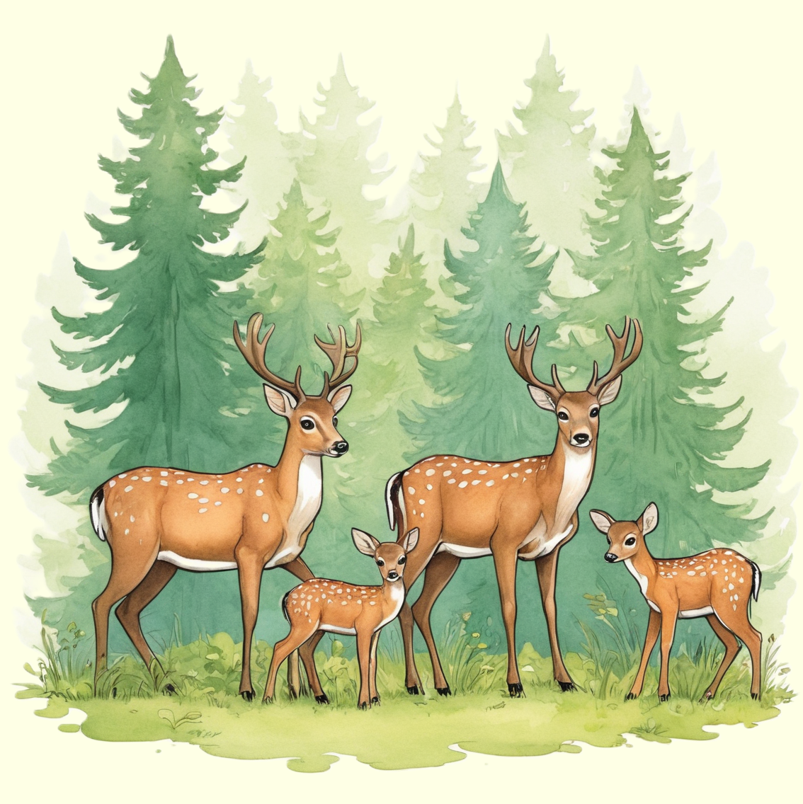

Das Reh, ein zierlicher Waldbewohner, bezaubert mit seinem eleganten Erscheinungsbild und seiner Scheuheit.
Erforsche die bezaubernde Welt dieser anmutigen Tiere und entdecke, wie sie in Wäldern und offenen Landschaften leben.

Elegante Bewohner der Wälder
Rehe sind grazile Huftiere, die in Wäldern, Wiesen und offenen Landschaften heimisch sind. Mit ihrem schlanken Körperbau, den großen Augen und den charakteristischen Geweihen ziehen sie die Aufmerksamkeit als anmutige Bewohner der Wälder auf sich. Rehe sind bekannt für ihre geschickte Fortbewegung und die Fähigkeit, sich leise durch das Unterholz zu bewegen.
Genügsame Pflanzenfresser in der Natur
Rehe ernähren sich hauptsächlich von Pflanzen, darunter Blätter, Gräser und Kräuter. Ihr Magen ist an die Verdauung von pflanzlicher Nahrung angepasst, und sie sind in der Lage, auch in unwirtlichen Umgebungen Nahrung zu finden. Rehe leben oft in Gruppen, besonders die weiblichen Tiere mit ihren Jungen. Sie haben ausgeprägte Sinne, insbesondere ein gutes Gehör und einen ausgezeichneten Geruchssinn, die ihnen helfen, Gefahren frühzeitig zu erkennen. Die Anpassungsfähigkeit der Rehe an verschiedene Lebensräume macht sie zu interessanten Vertretern der heimischen Fauna.